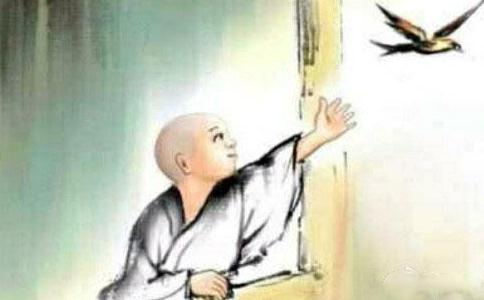

我现在还没能吃长素，做到的是早餐吃素，每星期二天吃素，其他时间能吃素就吃（吃三净肉，放生过的族类不吃）。由于妻现在还没有学佛，自已想做的事第一个压力是妻方面的，有的事情是不能硬顶着对干的（这我有过与妻多次闹矛盾经历），否则会影响夫妻和睦，个人修学不好的缘故，使妻对修学佛法产生误会。个人认为，能够成为夫妻有很大缘份，就物以类聚而言，两个人的因缘、福报、习性等方面有相似性。坚固自已对佛法的信心、努力改过修善、认真修学和听佛菩萨的教导是感化妻（佛化家庭）的主要方面；其他方面是让妻认为她在我心中的重要位置，多关心妻子，多做些家务，让妻生欢喜心，随顺妻子，如支持妻做面膜、买化装品、买衣服等，家里的许多事让妻做主等；妻还有一种望夫成龙的心态（即希我工作上有些建树|），我说修学佛法会使命运变好，如身体、工作等各方面变好，妻是半信半疑。我现在每星期吃素2天、每日1小时的定课修学、游览佛学网站等妻是同意的（上网时间不能太长，其他如放生等现在还瞒着妻）。我给她条件是08年奥运会时我职位上会带个“长”字。总得来说，今年夫妻关系比去年来得好。
我不太清楚自已想吃素的念头最早升起在什么时间，大约在2004年初，看过电脑中果卿的《现代因果实录》（打印下来时间是04年2月份），有很强烈的发心，直接原因吃素会使身体好，能治病。自已很早的时候体检查出心跳得快，心脏有点问题，加上有点口吃，对开会发言有很大的恐惧，心跳得极快。我牙齿也不太好，刷牙时老出血，看过医生说牙周炎之类，吃药过未能治好，针对妻对我健康的关心，去年我曾对妻说自已心脏要好要吃长素，吃素也能治牙病。妻没有答应，但征得每星期吃二天素的支持。学佛以来，特别是去年初开始不杀生并放生以来，心脏方面个人感觉好了很多，去年10月份单位组织的拓展训练，有一项爬上高杆顶站立空中跳抓横杠，我默念着佛号漂亮完成，我们这一组10多个人仅3人完成（有的同事不敢爬杆，或爬上摇晃杆顶抱住不敢跳），今年初参加了单位组织的献血，身体和心脏都能适应承受。今年的9月份，某早晨妻说“咦？现在你刷牙没有血了！”，我也没有注意，经妻提醒，发现这阶段牙齿好了很多，刷牙出血少了很多，很是高兴（这也是我写这段文字的起因）；另外，大约从高中起，我有便秘的毛病，没有看过医生，时好时坏，01年的时候很厉害，早晨家里解手了，想解解不出来或一小点，单位里还要解手一次，到晚上肚胀腿酸再解一次。现在，不知不觉中，便秘已离开我2至3年了，仔细想起来，是03年初，修学净土，每晚定课念佛以来，这个便秘病就渐没有了，04年开始就完全好了。
我以前我睡眠不太好，睡时若有蚊子嗡嗡声音被我听见，我会睡不着（妻和子没有感觉，睡得好好），并生大恼怒和躁，非消灭之不可，有时会跑到小房间睡并点上蚊香。家中有纱窗，我仍要点蚊香，电热的不够，后半夜市再换上另一片或点上燃烧的蚊香。04年夏季开始我不用蚊香了，听见蚊子声音，我念佛回向给他，我欠他的，睡着的时候你抽我血吧，没有睡着时用手赶一下或用毯子盖下脸，马上会睡过去了，醒来得时候也没有发现有蚊咬的肿块。有时妻会问“有蚊子？”，我说“没有呀！”（即便听见蚊子声音也说没有，我不杀生了），妻要买蚊香，被我挡回去了，理由蚊香有毒对身体不好，特别对儿子发育不好，开了空调不能点蚊香，妻也认可。去年夏天和今年刚过的夏天，我家没有用过蚊香。同时感觉家里很少有蚊子，或一个原因现在小区环境比较卫生。
关于放生，除汇款放生外，另用买物放生，从网上了解到放生有复杂的过程，个人认为规程上不如法，仅念念佛回向、提醒动物不要吃活的东西、不要被抓了等，有条件放生仍要身体力行，买物放生主要是一些不易被抓的如泥鳅、黄蟮、蟹、小甲鱼等，鱼类等其他放生次数不多。其中去年有一次放生规程做的很全面，某休息天妻单位有事，我把大半脸盆的小甲鱼都买来，请出西方三圣像，跪拜替小甲鱼完成三皈依，电脑中放大悲咒，供一杯水，自已跪着跟着唱颂几边，把水洒到小甲鱼身上，念着佛号一直到河边放生。放生带给我很大的快乐，看着他们游走人会变得安详和舒畅。放生对消除紧张十分有效，记得去年一次系统论文交流会，上午每个人宣读，会议环境宽松（各人员文章在会前一天发到手中），人进进出出，我第一次出席外单位人参加会议，快轮到我读时，人一下子紧张（怕口吃出丑），心中突然闪现一念头，放生能使我镇静，读完文章后应去放生，渐渐人不惊恐了并顺利地读完文章。等我放生回来，带着欣快的心情继续参加会议。放生是做善事的行为之一，其实做任何善事都会带给来好的情绪，并点点滴滴地在改善着个人命运。
在网上公布功过格快2个月了，妙音师兄说感谢我对网站的支持，实在讲我应该感谢才是，感谢妙音等众师兄的引导，感谢网站为大家提供了好的修学场所。至今，在修学上我仍是进进退退，有许多困难要克服，个人惰性大、习气厚，消极的情绪、不好的意念、语言、行为很多很多，行善方面做得远远不够。改造命运不是件轻松的事（诚如妙音师兄网上所言不吃苦攻苦，那老的命运更苦），公布功过格是针对自已的，占用网站空间来激励自已、监督自已、帮助自已，佛法的真实性、直观性、可检验性可通过自已的修学来验证。每个人的情况不一样，功过格制定的侧重也不一样，运行一段后如有不适可作调整，贵在长期坚持，勇猛心要发，长远心更要发（这是自我激励的话，我自已修学不好）。我是如半瓶水在晃荡和自我吹嘘够不停。上述文章如有不妥，敬请众师兄们批评指正。